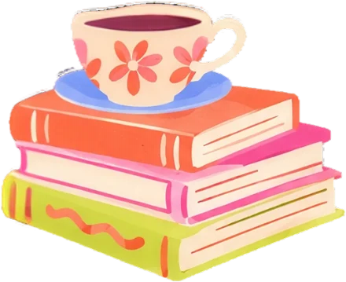
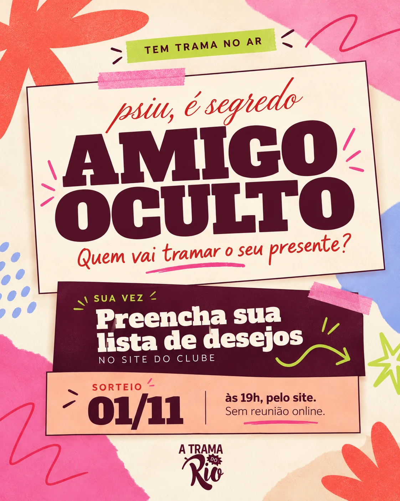

A Trama do Rio, do jeito que a gente quer.
Clube de leitura nascido no Rio em 2024, só de mulheres desde 2026. O livro é o ponto de partida; a amizade é o centro.
Conceito
O nome carrega três sentidos ao mesmo tempo, e a marca pode brincar com os três:
Trama de história
Construir uma narrativa e entrelaçar pontos de vista.
Trama de tecido
Linhas independentes que se juntam e viram uma coisa só, como as histórias de cada integrante.
Tramar
Aprontar, planejar coisa engraçada. O humor e a fofoca do grupo.
Ver como a Trama é e como fala
A Trama é
- Barulhenta, bagunçada e organizada (o caos organizado).
- Acolhedora, fofoqueira, irônica, sentimental.
- Descolada e ousada.
- Literária e leve.
A Trama não é
- Séria, certinha ou elitista.
- Infantil, nem estilo de livraria infantil.
- Minimalista nem comercial.
- Corporativa. Também não é “menininha”.
Como fala
Divertida e acessível, sem academicismo. Acolhedora, espontânea, coloquial, com humor e referências do grupo. Informal, mas com os avisos sempre claros.
Versatilidade (recomendação): a marca é fofa em alguns momentos e elegante em outros. Por isso há um eixo fixo (logo, letras, família de formas, cores, voz) e dois modos que mudam por peça sem virar outra marca: o barulhento, para o livro do mês e as redes, e o calmo, para avisos formais e parcerias. Detalhes na aba Layout.
Estética
Fundo calmo, cor lisa com grão de papel, letra gorda, formas soltas e o rosa como destaque.
Padrão
Xadrez, listra e bolinha, ou fundo liso com grão. Ver os elementos
Colagem e mix-media
A parte mais barulhenta da marca: camadas de fundo, papel, foto, fita e formas soltas. Mas nem toda peça precisa disso.

um capítulo
Exemplo ilustrativo. Os textos são de teste. Quando os PNGs de papel, fita e molduras chegarem, esta composição é refeita com eles.
Exemplos aplicados
Kit de Natal
- Ecobag, 3 marca-páginas, cartela de adesivos e caneca.

Referências
As quatro que mandam
- 07 Book Babes, 08 Templates book club, 09 Daisy Made, 12 Daze Social.
- Para a versão de portfólio, trocar por moodboard próprio.